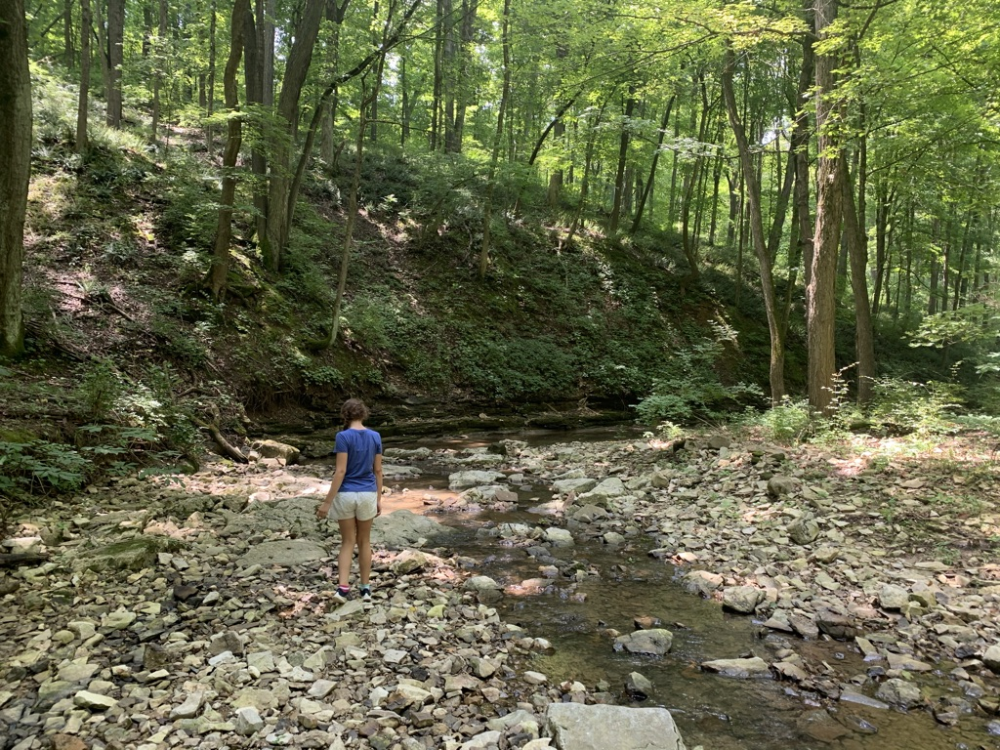

Coaching Little League
For almost thirty years of my life I played some form of baseball. Everything from wiffle ball, high level travel ball to slow pitch softball. Now that my playing time is coming to an end, I am fortunate my son has picked up the game. I love teaching the kids everything I know about the wonderful game of baseball.

Golf
Golf is something I recently started playing and absolutely love it.

Hiking
One of our favorite things to do as a family is to go hiking. Exploring through the woods is one of the most fun ways to exercise.
